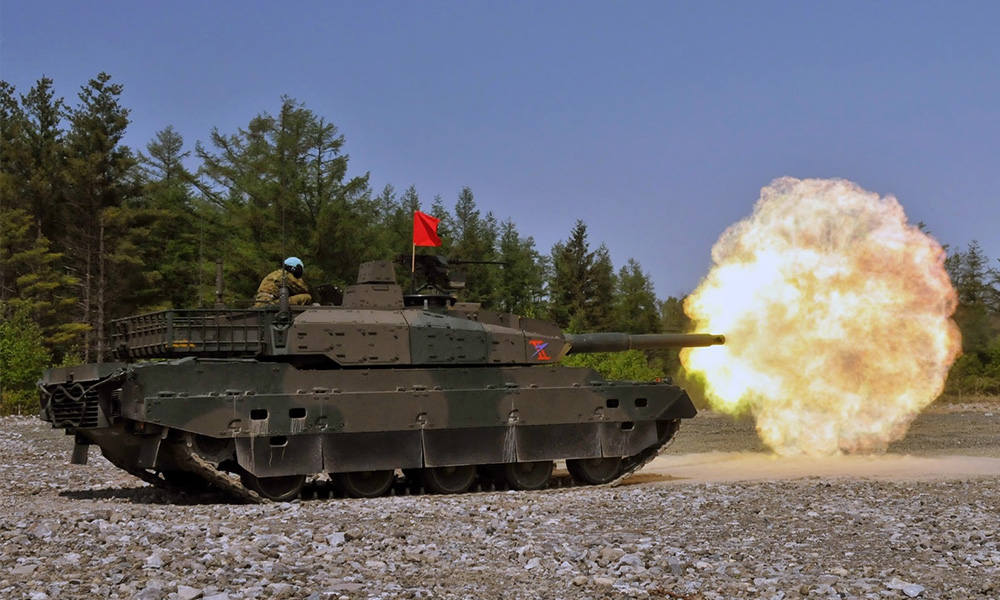

home > 사업분야 > 디펜스솔루션
디펜스솔루션
첨단 기술력으로 더욱 안전한 우리의 미래를 약속합니다
사업소개
국내 지상무기체계를 대표하는 방위사업은 40여년 이상 최신예 지상장비를 적기 전력화하는데 기여함으로써 고객의 신뢰뿐 아니라 국민의 안전과 평화에 기여하고 있습니다. 또한 지상무기체계의 독자적 연구개발 및 생산체계 구축, 최적화 성능개량 능력을 보유함으로써 첨단 핵심기술을 적용한 미래무기체계의 선두주자로 자리매김했습니다.
| 구분 | 프로젝트 | 년도 |
|---|---|---|
| 미래장비 | 병사용 웨어러블 로봇 개발 착수 | 2021 |
| 전차 | K1 전차 | 2014 |
| 차륜형장갑차 | 8x8 차륜형 장갑차 | 2012 |
| 모의훈련장비 | 전차 소부대 전술 모의훈련장비 | 2012 |
| 모의훈련장비 | 전차 조종 모의훈련장비 | 2012 |
제품소개
-
- 미래 무기체계
- 미래무기체계를 선도하는 현대로템 방위사업은 지상장비체계의 대표 기업으로 30여 년간 최신예 지상장비를 적기 전력화하는데 기여함으로써, 고객의 신뢰뿐 아니라 국민의 안전과 평화에 일익을 담당하였습니다. 이를 통해, 지상무기체계의 독자적 연구개발 및 생산 체계 구축 뿐 아니라, 최적화 성능개량 능력을 보유한 현대로템은 이제, 첨단핵심기술을 적용한 미래무기체계의 믿음직한 파트너입니다.
- 또한, 현대로템은 향후 차세대 병사들이 미래전장환경에서 보다 빠르고 안전하게, 보다 원활하고 효율적으로 임무를 수행할 수 있는 미래무기체계인 미래전투차량, 위험물탐지로봇 및 웨어러블 로봇을 개발하고 있습니다.
-
- K2 전차
- 한국군의 주력전차가 될 세계적인 수준의 K2전차에서 현재 한국군의 주력전차인 K1A1전차 및 한국의 지형에 적합하게 설계된 한국형 K1전차와 K1전차 차체를 기본으로 개발된 K1구난전차, K1교량전차에 이르기까지 지상무기체계의 대표주자로서 최상의 전투능력을 발휘하고 있습니다.
-
- 차륜형 장갑차
- 도심지역 및 확대된 전후방 작전지역에서 요구되는 기동성, 수송성, 운용성이 우수한 차세대 장비로 기존 단순 병력수송용 장갑차와 크게 다른 개념으로 방호력, 수상운행능력, 야지주행성능 등이 획기적으로 강화된 장비로 네트워크전 수행도 가능합니다. 현대 계열사의 최신 전차의 핵심요소 기술이 효율적으로 융합된 100% 국내기술로 개발됐으며 한국군 전력증강에 이바지하고 있습니다.
-
- 모의훈련 장비
- 모의훈련장비는 실전차와 동일한 승무원실 공간에서 다양한 전투상황을 부여하여 체계적이고 과학적인 훈련을 실시 함으로써 조종, 포술훈련에서 소부대 전술훈련까지 단기간내에 숙달된 전차 승무원을 양성 할 수 있는 첨단 과학화된 훈련장비 입니다.
-
- 기타 제품
- 기타제품군에 소개되는 중장비 수송용 트레일러와 제독장비는 대표적인 전투지원장비로서, 주요 전투장비를 효율적이고 신속하게 수송하거나, 화생방 전투로 인해 오염된 환경 및 물자를 신속히 해독함으로서, 전투환경을 개선시키는 필수 장비군입니다.